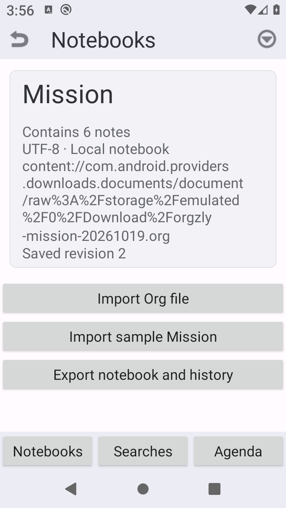
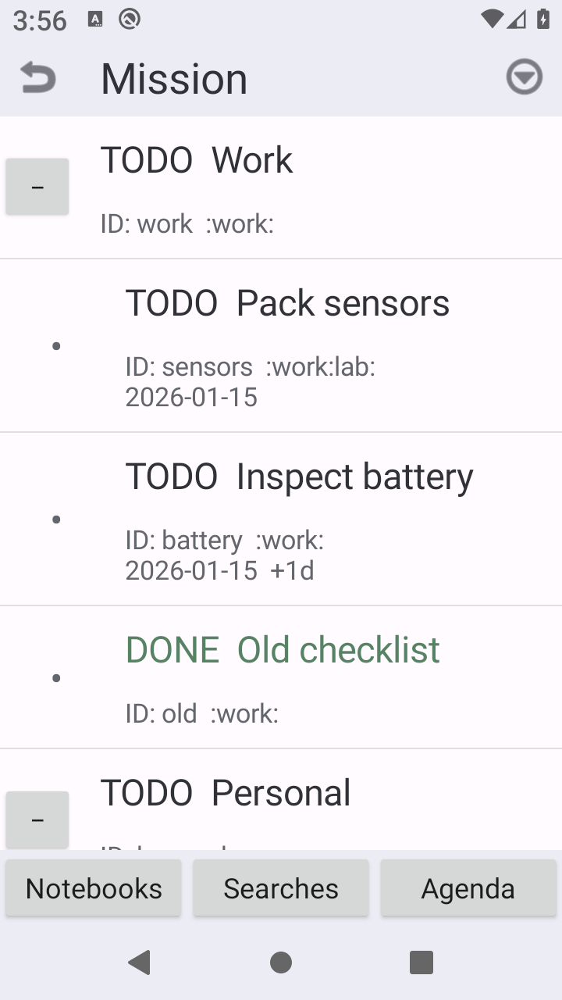
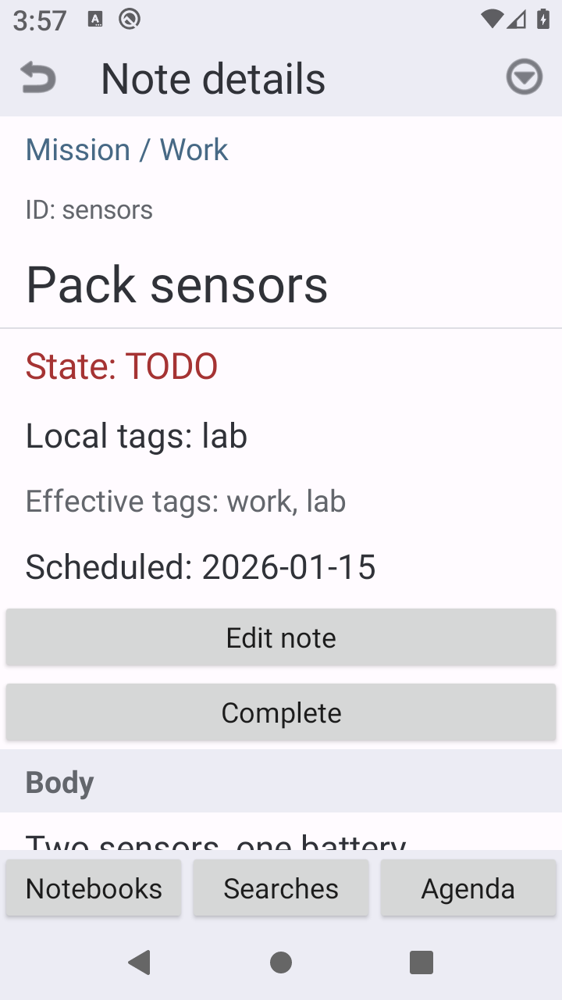
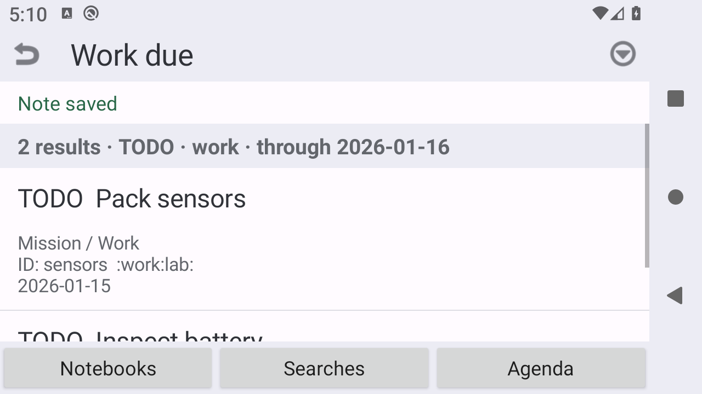
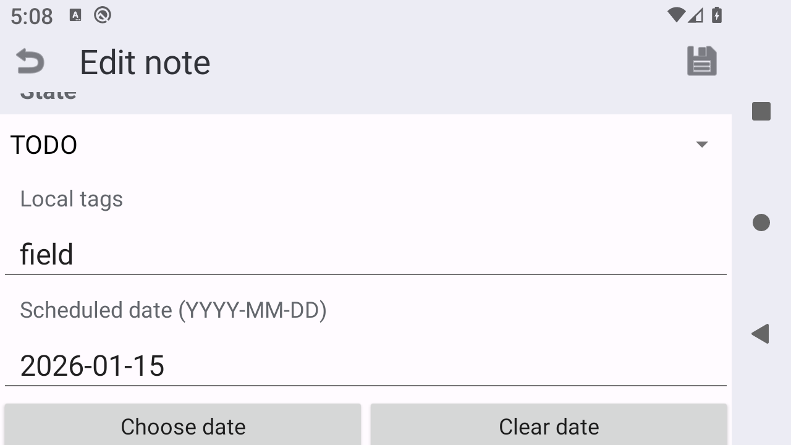
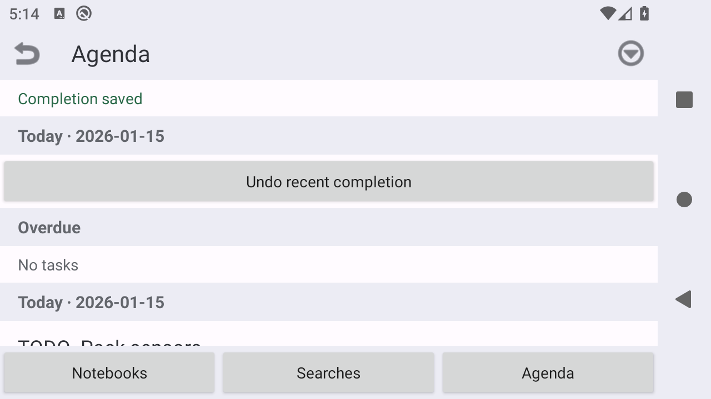
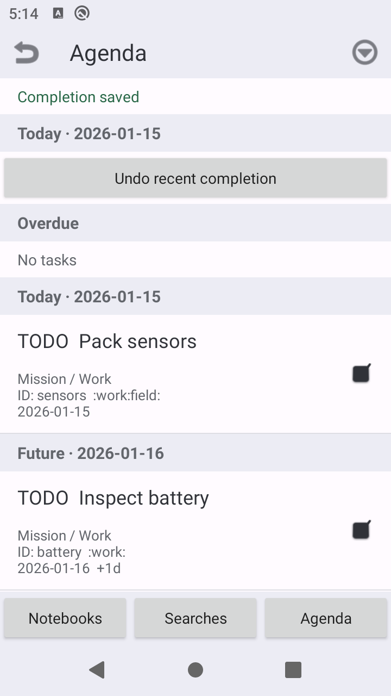

T01 移动与撤销
移动指定 ID 的笔记、重启再撤销；查询结果 2 → 1 → 2，同名笔记不混淆。
层级笔记、标签查询、重复任务与 Org 文件往返 · MCP-011
这是按题面重建的候选 App，经人工修复后验收通过，并非官方 Orgzly，也不是原模型答案直接通过。原版把导出文件保存为 Mission.org.txt；修复调整了导出 MIME 类型，原版失败记录保留。验收针对本题限定范围，不代表完整复刻原 App。
移动指定 ID 的笔记、重启再撤销；查询结果 2 → 1 → 2，同名笔记不混淆。
重复点击只生成一次完成历史；重复任务日期 01-15 → 01-16，撤销后恢复，再次完成与重启一致。
标签 field → lab 保存生效；未保存标题取消后丢弃，原 ID、正文和其他笔记保持不变。
拒绝移入自身或后代；通过系统选择器导出 .org，清数据后重新导入，文件内容逐字节一致。
重复 ID 导入原子拒绝、非叶子子树顺序、过期与 DONE 筛选、提交期间控件禁用均有证据。
核对主要页面信息层级；真实横屏、字体 1.3 可操作；旋转前后导出历史恰好 1 条。
来自本次修复版模拟器运行，非官方参考图。竖屏与横屏、字体设置和操作阶段分别标注。







| 编号 | 验收条件 | 结果 |
|---|---|---|
| R01-01 | 通过真实系统选择器导入mission.org并显示6个独立ID | 通过 |
| R01-02 | 解析星号层级、TODO/DONE、局部标签、日期/+1d、ID和正文 | 通过 |
| R01-03 | 同名sensors/home-sensors不合并 | 通过 |
| R01-04 | 重复ID整次导入拒绝且原数据不变 | 通过 |
| R02-01 | 真实折叠及展开节点 | 通过 |
| R02-02 | 长按sensors选择并移动到Personal | 通过 |
| R02-03 | 移动即时重算继承work，Work due从2项变1项 | 通过 |
| R02-04 | 移动保留ID、正文、局部标签、子节点顺序、日期 | 通过 |
| R02-05 | 撤销移动恢复sensors父节点及Work due两项 | 通过 |
| R02-06 | 撤销后sensors正文与原夹具一致 | 通过 |
| R02-07 | 同名home-sensors全部字段不变 | 通过 |
| R02-08 | 尝试Work移至后代battery显示拒绝 | 通过 |
| R02-09 | 后代移动拒绝后完整树/数据不变 | 通过 |
| R02-10 | 移至自身被拒绝且数据不变 | 通过 |
| R03-01 | 编辑标题保存到原ID且不新增 | 通过 |
| R03-02 | 编辑TODO/DONE保存到原ID | 通过 |
| R03-03 | 局部标签field改lab并保存，原ID sensors | 通过 |
| R03-04 | 编辑计划日期保存到原ID | 通过 |
| R03-05 | 标题Discard真实输入后取消，原标题保留 | 通过 |
| R03-06 | 树、搜索、Agenda同时反映同一次编辑 | 通过 |
| R03-07 | 状态和标签有可读文本 | 通过 |
| R04-01 | Work due初始恰battery/sensors | 通过 |
| R04-02 | TODO AND继承work AND有日期<=16筛选 | 通过 |
| R04-03 | 同日按ID升序，跨日按日期升序 | 通过 |
| R04-04 | 无日期父节点不进入结果 | 通过 |
| R04-05 | 固定今日2026-01-15，今日/未来分组与日期一致 | 通过 |
| R04-06 | 存在逾期项时归入逾期分组 | 通过 |
| R04-07 | DONE不出现在Agenda | 通过 |
| R04-08 | 查询结果显示ID与来源面包屑 | 通过 |
| R05-01 | 完成battery日期15加一天到16且仍TODO | 通过 |
| R05-02 | 首次完成立即恰1条历史 | 通过 |
| R05-03 | 撤销完成恢复日期15并移除历史 | 通过 |
| R05-04 | 再次完成并重启后日期16，history恰1条且字段正确 | 通过 |
| R05-05 | 连续快速点按一次只提交一次 | 通过 |
| R05-06 | 提交期间Complete控件禁用 | 通过 |
| R06-01 | 保存成功后force-stop恢复原ID与编辑数据 | 通过 |
| R06-02 | 移动成功后force-stop恢复新父节点及继承标签 | 通过 |
| R06-03 | 完成成功后force-stop恢复日期与历史 | 通过 |
| R06-04 | 撤销移动后force-stop恢复层级/查询 | 通过 |
| R06-05 | 撤销完成后force-stop恢复原日期/零历史 | 通过 |
| R07-01 | 系统导出选择器实际生成文件 | 通过 |
| R07-02 | 导出文件扩展名为.org | 通过 |
| R07-03 | 导出UTF-8及ID/层级/局部标签/正文/日期/+1d完整 | 通过 |
| R07-04 | 清数据后仅以真实导出文件重新导入 | 通过 |
| R07-05 | 往返后6 ID、字段、子节点顺序保持 | 通过 |
| R07-06 | 往返后Work due结果保持battery/sensors | 通过 |
| R07-07 | 系统另导出history.json含正确字段且无重复 | 通过 |
| R08-01 | Notebook/详情/保存搜索/Agenda均有真实可达页面 | 通过 |
| R08-02 | 从查询进入详情再返回保持Work due上下文 | 通过 |
| R09-01 | Notebook本地名称与主要层级 | 通过 |
| R10-01 | 大纲缩进/折叠/选择工具栏主要层级 | 通过 |
| R11-01 | 详情状态/标签/日期/正文主要层级 | 通过 |
| R12-01 | 保存搜索列表/查询名称主要层级 | 通过 |
| R13-01 | Agenda按日期分组与面包屑主要层级 | 通过 |
| B01 | 可安装APK/源码/构建说明/自测记录 | 通过 |
| B02 | 所有核心控件有可访问名称与可读身份/状态/计数 | 通过 |
| B03 | 横屏核心按钮不遮挡 | 通过 |
| B04 | 1.3字体核心按钮不遮挡 | 通过 |
| B05 | 旋转不会重复提交 | 通过 |
| B06 | Org导出和重新取得不依赖私有数据库/包名 | 通过 |
| T01-RESET | T01从清数据并导入原始夹具开始 | 通过 |
| T02-RESET | T02独立清数据导入原始夹具 | 通过 |
| T03-RESET | T03独立清数据导入原始夹具 | 通过 |
| T04-RESET | T04原始输入初态 | 通过 |
完整矩阵另含 2 项非必选记录：API 28 工具诊断与折叠状态恢复；不计入 64 项必选结果。视觉检查依据主要信息层级、组件和状态表达，不声称像素级一致。
验收 APK 的 SHA256：fef635ec6050dddf6cddf391372f60834e8e3868d2c75d6b3bbd380f14ca5aa2